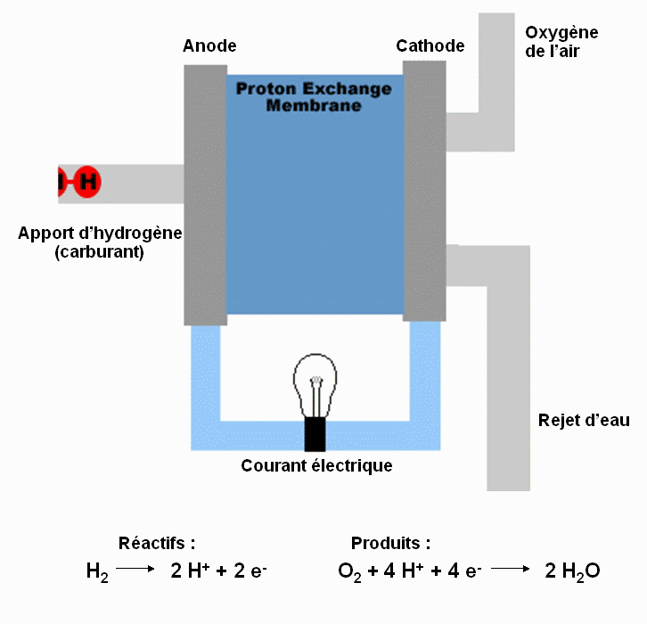
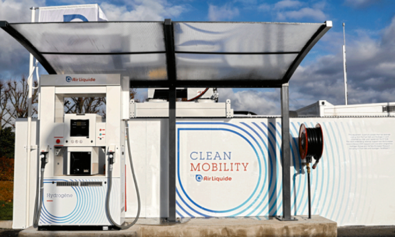

Cycle de fonctionnement de la pile
Propriétés de l'atome :
L'hydrogène est l'élément le plus abondant et dense de l'univers. La molécule d'hydrogène H2 est la molécule la plus ancienne la plus petite et la plus légère de l'univers. Il est présent sur Terre en grande quantité et combiné avec d'autres éléments. Il est nécessaire de l'extraire des autres éléments pour obtenir ce gaz aux multiples applications.
On la retrouve dans toutes les étoiles comme le soleil qui tire son énergie de la transformation de L'hydrogène en hélium au cours d'une réaction thermique et nucléaire. La molécule d'hydrogène n'a ni couleur ni odeur et n'est pas toxique. C'est aussi le combustible du soleil qui permet de transmettre de la chaleur et lumière. Il est aussi utilisé comme carburant des fusées et comme réactifs pour le raffinage. Les quatre planètes géantes gazeuses de notre système solaire Jupiter, Saturne, Uranus et Neptune sont formés d'hydrogène et la Terre a des sources d'hydrogène combiné avec d'autres éléments comme l'eau et hydrocarbures.
L'histoire de sa découverte :
Il a été découvert en 1766 par un physicien britannique Cavendish. Ce dernier a fait réagir des métaux avec des acides puis il a remarqué un gaz qui nomma air inflammable.
C'était de l'hydrogène et il avait constaté que sa combustion formait de l'eau. En France en 1783, Lavoisier donna un nom : l'hydrogène
Physiciens Cavendish et Lavoisier
En grec Hydrogène signifie générer de l'eau.
En 1838, un chimiste allemand Schönbein découvre le procédé de la pile à combustible pour produire de l'électricité à partir d'hydrogène et oxygène.
En 1898, Dewar parvient à liquéfier l'hydrogène en le refroidissant à -252,8 degrés. Son procédé de liquéfaction à été amélioré par Georges Claude un physicien français.
Aujourd'hui l'hydrogène est l'un des vecteurs énergétiques propres du 21ème siècle pour un transport respectueux pour l'environnement.
(comme par exemple la Norvège).
Pile à combustible
La pile à combustible est composée de 3 parties principales : l’anode et la cathode, ce sont les catalyseurs ainsi qu’une membrane, aussi appelé électrolyte.
Le principe de fonctionnement de la pile à combustible est simple : on transforme l’hydrogène stockée dans un réservoir haute pression ainsi que l’oxygène de l’air pour avoir de l’électricité en sortie et un rejet d’eau. Tout d’abord, de l’hydrogène sous forme gazeux est injecté sous forte pression dans l’anode. L’hydrogène se fractionne en deux ions H+ et deux électrons e- du au fait que la membrane en platine ne peux pas laisser passer les électrons. Ensuite les électrons e- permettent de créer le courant électrique pour alimenter le moteur. Les ions H+ passent dans la membrane et arrivent dans la cathode avec les électrons et l’oxygène provenant de l’air et forment un rejet d’eau H2O. l’équation de cette réaction est la suivante: 2 H2 (g) + O2 (g) = 2 H2O (l)
Production de l'hydrogène
La production de carburant de ces véhicules n'est pas une tâche simple et encore moins écologique la majorité du gaz hydrogène est produite dans des centrales d'énergie grâce à un processus de fracturation hydraulique en faisant réchauffer à 1000 degrés de la vapeur qui est combiné avec du méthane pour produire de l'hydrogène, du monoxyde de carbone ainsi que du CO2. Ensuite avec une réaction chimique de conversion eau gaz le monoxyde de carbone et la vapeur utilisent des catalyseurs pour produire du dioxyde de carbone et de l'hydrogène. Finalement le dernier processus appelé absorption modulée en pression enlève toutes les impuretés laissant seulement de l'hydrogène pur.
Ce processus qui est utilisée par 95 % des centrales peut-être réalisé avec d'autres combustibles comme l'éthanol le propane ou le gazole. Cependant à cause de différentes défaillances, on déplore souvent des fuites de méthane un gaz à effet de serre bien plus dangereux que le CO2. En effet il représente un impact 86 fois plus fort que ce dernier ainsi cette méthode reste toujours polluante même si l'industrie se justifie sur le fait que ces émissions de gaz à effet de serre sont inférieures à celles produites par la combustion des moteurs des voitures à essence.
Il existe une méthode alternative qui s'appuie sur l'électrolyse de l'hydrogène en exploitant des courants d'eau pour produire de l'énergie électrique qui sera ensuite utilisé pour la production d'hydrogène et d'oxygène. Malheureusement ce processus nécessite beaucoup d'énergie et envoie 80 % de l'énergie électrique totale pour produire de l'hydrogène les 20 % restants sont donc gaspillés.
Stations de recharge

Les véhicules peuvent être rechargés au prix du gaz hydrogène disponible dans quelques stations services. La méthode de la recharge est semblable à celle d'une voiture normale mis à part la prise verrouillable pour bien attacher la pompe. Les voitures se rechargent avec une pression entre 350 et 700 bar. Le conducteur peut attendre entre 3 et 5 minutes pour remplir sa voiture à hydrogène.
Peu présente en France elle empêche le développement de la voiture a hydrogène et inversement le manque de voiture empêche la construction de station de rechargement
Elles ont beaucoup de mal a se développer aussi car très coûteuse, entre 1 et 2 millions d’euro unité ! En France, la première entreprise en terme de station de rechargement est Air Liquide.
Par exemple, elle a construit deux stations importantes, l'une à l'aéroport Roissy Charles de Gaulle et la seconde à l'aéroport d’Orly.
Une station à hydrogène est composée d’un connecteur pour la distribution, de cuve de stockage et d’unité de compression.
Pour le plein la station gère toute seule et remplie parfaitement la voiture.